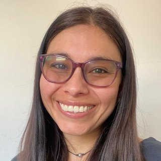

Seminario Dinámica Porteña
Seminario permanente desde 2008
Últimas charlas
Recycle your heterodimensional cycle: an ergodic approach

Katrin Gelfert — UFRJ, Brasil
Se define el concepto de ciclos heterodimensionales entre medidas ergódicas hiperbólicas de distinto índice, y se estudia el impacto de la existencia de tales ciclos sobre las propiedades topológicas del espacio de medidas invariantes, presentando algunos ejemplos. Trabajo conjunto con L. Díaz y Ch. Bonatti.
Sala 2-2, Instituto de Matemáticas
Cotas inferiores para la entropía del locus de no hiperbolicidad

Lorenzo Díaz — PUC-Rio, Brasil
En el contexto de dinámicas parcialmente hiperbólicas que admiten medidas ergódicas con exponentes de Lyapunov positivos, negativos y nulos, se estudia el conjunto de puntos que tienen algún exponente de Lyapunov nulo. En particular, se presentan cotas inferiores de carácter dinámico para la entropía topológica de este conjunto. Trabajo en colaboración con R. Ures, D. Wang y J. Yang.
Sala 2-2, Instituto de Matemáticas
Información tomada de los anuncios y resúmenes del grupo; se actualizará cuando se anuncie una nueva charla.
Sobre el seminario
El seminario permanente Dinámica Porteña reúne, desde 2008, a investigadores del Instituto de Matemáticas de la Pontificia Universidad Católica de Valparaíso y a visitantes de Chile y del extranjero para presentar y discutir avances en sistemas dinámicos y áreas afines. A lo largo de cerca de veinte años se ha consolidado como un espacio estable de colaboración científica, incorporando también minicursos y seminarios de estudiantes.
Seminarios anteriores
El archivo continuo de charlas del seminario, con más de la mitad de los expositores provenientes de instituciones extranjeras de países como Brasil, Estados Unidos, Francia, Alemania, Japón, Israel y Nueva Zelanda, está disponible en este sitio y puede consultarse por expositor, institución o país.
El espacio de medidas invariantes de difeomorfismos tipo Kan
Bárbara Núñez Madariaga — PUCV-UV-UTFSM, Chile
En 1994, Ittai Kan introdujo una construcción para demostrar que un difeomorfismo parcialmente hiperbólico del tipo K(x,y,t)=(3x+y, 2x+y, t+f(x,t)) admite exactamente dos medidas físicas con cuencas densamente entrelazadas, es decir, todo abierto no vacío del espacio ambiente contiene conjuntos de medida Lebesgue positiva pertenecientes a la cuenca de cada una de las medidas físicas. Motivados por esta construcción, se estudian los componentes fundamentales que generan este fenómeno para una clase general de difeomorfismos tipo Kan, definidos como skew-product sobre una base de Anosov transitiva, usando técnicas de exponentes de Lyapunov, foliaciones invariantes, descomposición ergódica y el Principio de Invariancia de Avila-Viana.
Caos topológico en transformaciones beta simétricas
Rafael Alcaraz Barrera — Universidad Autónoma de San Luis Potosí, México
Tras su introducción por Rényi y Parry en la década de 1960, las transformaciones beta han atraído la atención de matemáticos de distintas áreas debido a su estrecha relación con la dinámica unidimensional, la dinámica simbólica y la teoría de números. En esta charla se da una introducción a este tipo de transformaciones del intervalo y se explica por qué exhiben diversas propiedades caóticas, presentando además algunos resultados parciales sobre las propiedades de los conjuntos de Li-Yorke para transformaciones beta que satisfacen una condición de simetría. Trabajo conjunto con Carlos Rubén Osorio Anderson.
El espacio de moduli de quasimorfismos sobre shifts de tipo finito
Pablo Carrasco — Universidade Federal de Minas Gerais (UFMG), Brasil
Se considera un espacio de moduli asociado a quasimorfismos "positivos" y se exploran algunas consecuencias geométricas. Dado un grupo G, un quasimorfismo es un mapa L del grupo en los reales donde L(ab) está a distancia uniformemente acotada de L(a)+L(b); entender tales mapas está íntimamente relacionado con la geometría del grupo base. Pasando a un lenguaje dinámico donde el quasimorfismo se traduce en un objeto sobre un subshift de tipo finito, se utilizan técnicas de formalismo termodinámico para su estudio. Trabajo en marcha junto con Stephen Cantrell, Emilio Corzo y Federico Rodríguez-Hertz.
Dinámicas no lineales en sistemas ecológicos

Viviana Rivera Estay — Universidad Arturo Prat, Chile
Los sistemas ecológicos exhiben comportamientos dinámicos variados como equilibrios estables, oscilaciones y transiciones de régimen. La charla explora cómo la teoría de sistemas dinámicos ilumina estos patrones complejos a través de ejemplos de dinámica de poblaciones, mostrando cómo cambios en interacciones biológicas, condiciones ambientales y estructura espacial modifican el comportamiento a largo plazo.
Inverse SRB measures for endomorphisms on the two torus
Victor Janeiro — Universidade Federal de Minas Gerais (UFMG), Brasil
Propiedad SPR para una clase de skew-products
Karina Marín — Universidade Federal de Minas Gerais (UFMG), Brasil
Para skew-products con fibras bidimensionales, se establece una relación entre la continuidad de la entropía fibrada y la continuidad de los exponentes de Lyapunov de la fibra, extendiendo el teorema para superficies demostrado por Buzzi-Crovisier-Sarig. Como consecuencia, se obtienen clases de skew-products que satisfacen la propiedad "strong positive recurrence" (SPR); en particular, estos sistemas tienen un número finito de medidas de entropía máxima, todas con buenas propiedades estadísticas. Trabajo conjunto con Mauricio Poletti (UFC) y Filiphe Veiga (UFMG).
Atractores de tipo Birkhoff
Martín Sambarino — Universidad de la República, Uruguay
Los atractores de Birkhoff surgen del estudio de mapas disipativos del anillo que desvían la vertical. Estos atractores tienen una estructura topológica complicada (continuo indescomponible) cuando su conjunto de rotación es no trivial. La charla generaliza esta noción de atractores y estudia su continuidad y la de su conjunto de rotación en relación a la variación del mapa del anillo.
¿Qué son las correspondencias holomorfas?
Vanessa Matus de la Parra — Stony Brook University, Estados Unidos
Se introduce la noción de correspondencia holomorfa como un objeto natural donde ambos lados del diccionario de Sullivan coexisten, y se resume lo que se conoce en términos de equidistribución y entropía. Si el tiempo lo permite, se habla del Multibrot y el Multiverse, así como de funciones de Green para el caso de diferentes bi-grados.
Ver todos los seminarios anteriores (2008–2026), buscable por expositor, institución o país →